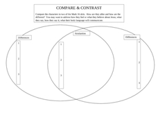

Contrast Poems allow for you to see things, including yourself, in different, contrasting ways.|
Pattern 1: I am_____________ / I am not______________ I hope___________ / I do not hope__________ I am like_____________ / I am not like___________ I fear______________ / I do not fear_____________ I am like__________ /I am not like___________ |
Pattern 2: Title: Name of object, tradition, environment, etc. Lines #1-2-3: Write three lines that paint a vivid picture of the title Skip a line Lines #4-5-6: Write three lines that paint a different picture Follow the same pattern in the second three lines you did in the first. For example, if line #2 contains two adjectives and a noun, line #4 should also have two adjectives and a noun |
|
I am a lion/ I am not a mouse I hope for peace/ I do not hope for war I am like a sturdy oak/ I am not like a weeping willow I fear poverty/ I do not fear wealth I am like the number 1(alone)/ I am not the number 0 (nothing) |
I am magical / I am not a wizard I hope for the happiness of others / I do not hope for people to have pain I am like a horse / I am not like a cow I fear losing my horn / I do not fear flying I am like Santa Claus /I am not like a brown bear |